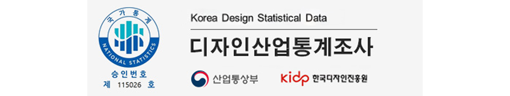

HOME > 사업안내 > 연구개발정책
R&D Policy연구개발정책
글로벌 트렌드를 선도하는 디자인 정책 연구를 통해,
대한민국 디자인 산업의 미래 성장 동력을 확보합니다.
신시장 창출을 위한 미래 제품·서비스 선행연구
미래 디자인 어젠다를 설정하고 연구과제를 수행합니다.
- 추진배경
- 잠재시장 또는 신규형성 단계에 접어든 신산업·신시장 분야의 선행연구를 통해 기업의 신상품 기획 역량 강화
- 미래시장 및 새로운 산업생태계 연구를 바탕으로 중소·중견기업이 근미래 신상품 개발에 활용할 수 있는 시각화된 시장 예측 및 시나리오 연구 결과물 제공 필요
- 추진방향
- 국내외 디자인·기술 트렌드 및 라이프스타일 연구
- 크리에이티브 워크숍을 통한 사용자 중심 핵심 아이디어 발굴
- 다학제 연구셀 운영으로 미래 제품·서비스 시나리오 개발
- 산업계 및 학계 등 전문가 참여를 통한 검증단계를 거쳐 산업현장과 사용자 중심으로 상품기획 시나리오 고도화
KIDP 선행연구 5단계
-
1단계
미래예측 선행연구
-
2단계
다학제적 아이디어 발굴
-
3단계
선행디자인 컨셉 및 시나리오 개발
-
4단계
컨셉 및 시나리오 검증
-
5단계
제품·서비스 컨셉 제시 및 시나리오 구체화
디자인산업통계조사
체계적인 데이터 구축으로 선도하는 디자인 미래 전략입니다.

디자인산업통계조사는 우리나라 디자인계의 유일한 통계조사입니다.
디자인산업 및 환경에 대한 정확한 기초조사를 통해 디자인산업현황, 투자 및 개발 현황, 경쟁력, 인식 및 선호도 등
디자인산업 전반에 걸친 실태자료를 확보하고 객관적이고 신뢰성있는 자료구축을 통해 정부, 산업계, 학계, 연구기관 등의
디자인정책 및 전략 수립 시 기초자료를 제공하는데 조사목적이 있습니다.
디자인산업 통계조사 연혁
-
1997
디자인센서스 조사
-
2007
국가승인통계 지정
-
2013
디자인 산업분류 제정
-
2024
국가통계 품질관리 최고수준 달성
- 현재
-
01
- 조사기간
- 조사기준 시점 : 조사 전년도 1월 1일부터 12월 31일
- 조사실시 기간 : 조사년도 8월~12월
-
02
- 조사대상
-
- 실태조사
- 일반업체(디자인활용업체), 디자인전문업체, 공공부문
- 문헌조사
- 디자인 관련 공공/대학 교육기관 현황 및 학위자 수
- 프리랜서
- 국내 프리랜서 디자이너 대상 표본추출
-
03
- 주요조사내용
-
- 일반업체
- 디자인부서/디자이너/활용여부, 투자 등
- 활용업체
- 현황 및 사업체 현황, 디자인 인력
- 전문업체
- 사업체 현황, 실적, 인력 인프라
- 공공부문
- 디자인 활용 현황 및 발주현황
- 고등교육
- 전공별 졸업자/취업자/취업률